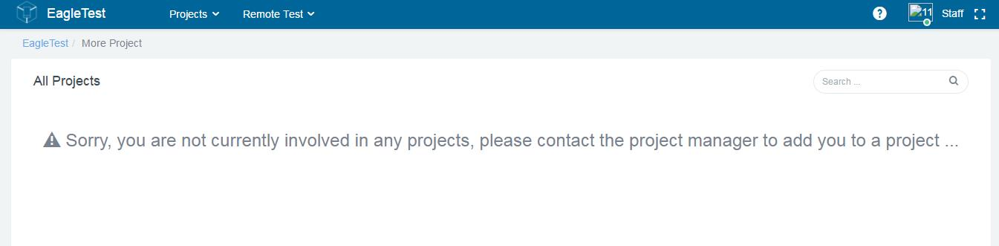
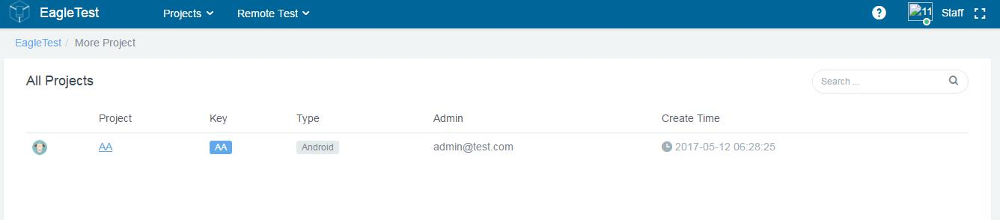

1.2.2 Login as Staff
There are two scenarios when Staffs login to the system for first time. One is not associated to an User Identity (project administrator and members): After login successfully, the default page is shown as Figure below to alert user to be associated to a project; The other is associated to an User Identity: After login successfully, the default page is shown as Figure below. User can do any test operation in the projects she/he belongs

Staff login for first time
Project manager and member login